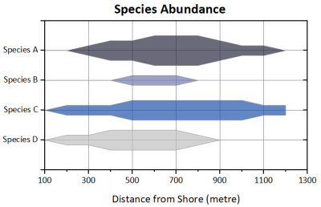

Kite-Diagramm
Kite-Diagram
- 
Datenanforderungen
Wählen Sie mindestens zwei Y-Spalten aus (oder einen Bereich aus mindestens zwei Y-Spalten). Wenn es eine verbundene X-Spalte gibt, stellt die X-Spalte die X-Werte bereit; ansonsten wird die Zeilenindexzahl verwendet. Einzelne Zeichnungen werden entlang der vertikalen Achse mittels des Spaltenlangnamens beschriftet.
Diagramm erstellen
Wählen Sie die gewünschten Daten aus.
Wählen Sie im Menü .
Vorlage
kite.otpu (installiert im Origin-Programmordner).
Hinweise
- Passen Sie die Auffüllung der oberen und unteren Zeichnung durch Doppelklick auf die vertikale Achse und Ändern der Werte Von und Zu für auf der Registerkarte Skalierung an.
- Vertikale Gitternetzlinien werden hingefügt, indem erst doppelt auf die horizontale Achse geklickt und dann das Kontrollkästchen Zeigen unter Hauptgitternetzlinien und/oder Nebengitternetzlinien aktiviert wird.